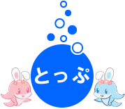

海のそばに建設された遊園地です。 テキストテキストテキストテキストテキストテキストテキストテキスト
マリンスポーツ・海遊びを楽しむことができるエリアです。 ダイビング・シュノーケリング・パラセーリング等、人気のレジャーを用意しております。 フィッシング用に釣り道具やボートのレンタルも行っております。
毎月期間限定の季節のイベントを開催しております。 詳しい内容はイベントページを参照ください。
全室オーシャンビュー、絶景が自慢のホテルです。 レストランやカフェを併設しておりますので休憩にご利用ください。
